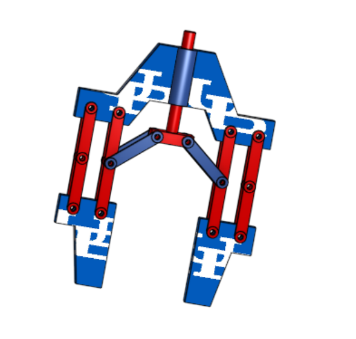
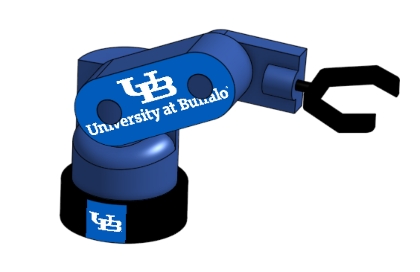
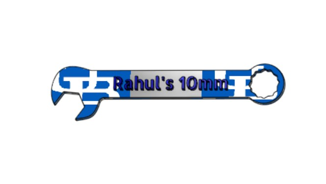
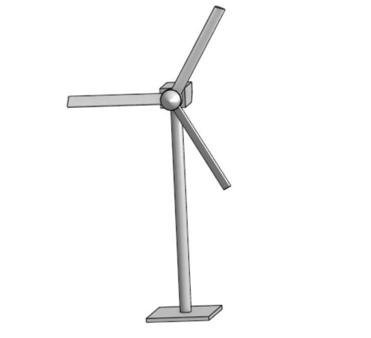
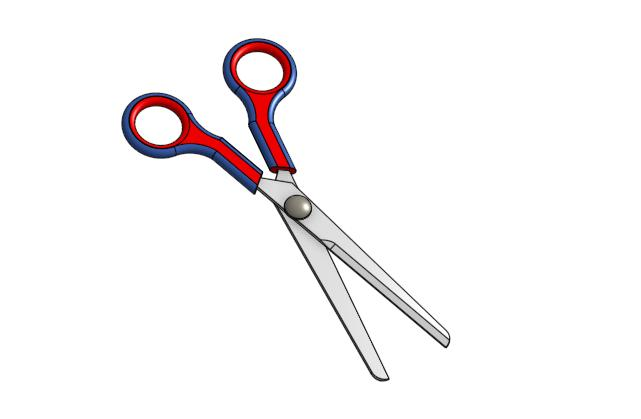
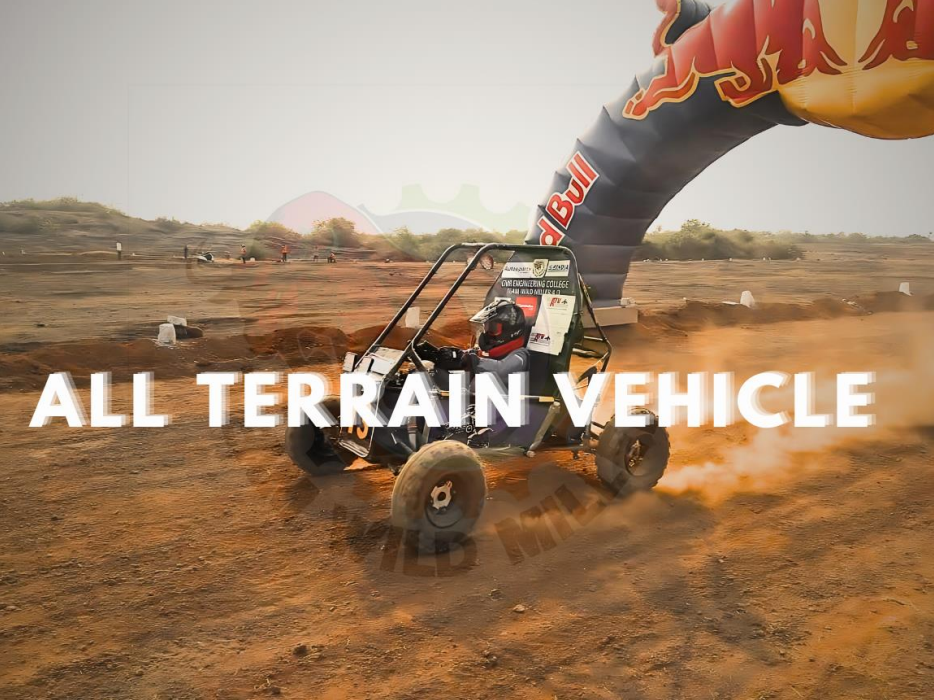

Mechanical Design
Go Kart Chassis Design
This chassis project design is to develop with an attention to structure, layout, balance, and practical design thinking to enhance the design of the component.
Home
A responsive portfolio website built to present project work in a clean, modern, and organized structure to showcase the project related to the industrial and mechanical engineering.

Industrial | Mechanical | Sustainability
About
My project website is a digital gallery where all works are shown in this site. I’ve organized the projects into different folders and sections so each project type has its own space, making it super easy to navigate and explore. This setup not only keeps things neat and clear but also adds a flow to the site.
Projects
This chassis project design is to develop with an attention to structure, layout, balance, and practical design thinking to enhance the design of the component.

This hand gripper project showcases a simple mechanical gripping mechanism designed to demonstrate motion, linkage coordination, and practical engineering design in the robotics motion.

This 9V battery design project showcases a clean and realistic CAD model created with attention to proportions, surface detailing, and product appearance.

This axial cooling fan design is used in modeling the housing, hub, and curved blades to balance airflow performance with a clean aesthetic.

This project is a concept-driven mechanical model to combine the engineering form, automation inspiration, and visual presentation in the design.

This project is a product-style iphone CAD model that focusing on proportions, smooth surface work, and realistic design presentation throughout the CAD Modeling.

This 3D model of the Allen Wrench captures the geometric accuracy, functional design of the tool and reflecting its real-world engineering significance.

This project goal is to design, analyze, and build an axial turbine wheel, an essential part of the engines used in aerospace and power generation.

This project design of the flower vase model is to demonstrates creative product design with smooth curves, symmetric patterns, and precise surface detailing of the design.

This project focused on achieving a visually realistic result while maintaining clean geometry and balanced proportions.

This modern business jet model featuring a sleek fuselage, swept wings, rear-mounted engines, and a T-tail, designed to highlight aerodynamic efficiency and strong 3D modeling skills.

This design highlights the skills in CAD modeling and product visualization, showing how functional objects can also serve as personalized and visually appealing to promote products in the market with a cause.

This design demonstrates the working principle of a quick return mechanism, where rotatory input is converted into slider (forward and return) motion . It highlights the practical application of kinematic principles in mechanical systems.

This 3D model of the Sledge Hammer showcases a detailed representation of a tool, designed with precision to demonstrate both mechanical structure and ergonomic handling of the component.

This design contains the aesthetic branding with functional mechanical geometry of a tool, perfect modeling, text embossing, and pattern application for both practical and visually appeal of the tool.

This design highlights the design ability to create furniture-style CAD models with balanced proportions, surface detailing, and a functional layout suitable for product visualization and Designing.

This model highlights precision in pattern creation, surface detailing, geometric consistency, and demonstrating strong attention towards realistic design representation.

This project improves the precision modeling, performance simulation, and fluid mechanics application to deliver a more efficient marine propulsion solution.

This twisted connector highlights the ability to create functional component designs with precise hole placement, balanced form, and clean surface detailing suitable for engineering visualization and product design applications.

The model highlights the ability to create organic shapes in CAD while maintaining clean geometry, balanced proportions, and a polished presentation for concept-based design work.

This project is to create a ball bearing with exceptional performance, robustness, and dependability for demanding uses in industrial machinery, automotive, and aircraft industry.

The project features a realistic canopy made up of curved triangular panels supported by a central metallic pole and a sturdy circular base.

The project model features the contoured blue handle for ergonomic grip and a precisely shaped flat tip, commonly used in mechanical assembly and repairing the macnhines.

This Keychain design has a combination of functionality, durability, and portability. This keychain is designed in the form of a motorcycle to achieve the weight management of the keychain and accommodate multiple tools inside the design.

This pipe design has a precision, optimized for manufacturability and highlights key skills in surface modeling, part intersections, and geometry control.

This project design highlights the precise curvature, grip details, and brand alignment, this model highlights my skills in surface modeling, text embossing, and rendering for presentation.

This project design entitles the gears field of geometry, choice of materials, and stress analysis are all optimized.

This design model features an angled support surface, a sturdy base, and a front lip to securely hold a mobile device in position while maintaining a clean geometric form.

This project enhanced the Knowledge in mechanical modeling, including defining cylindrical and angular features to simulate torque-driven functionality.

The design demonstrates the principles of aerodynamic efficiency, mechanical stability, renewable power generation, and reflecting the focus on integrating sustainable technologies within modern engineering solutions.

This 3D model of a custom UB-themed flask, incorporating the university logo and a sleek cylindrical form. The design demonstrates the ability to integrate branding elements with practical product design, showcasing both creativity and CAD modeling skills.

This 3D model of the custom UB-themed coffee mug, incorporating the university logo with a clean cylindrical form for promoting the product. This project demonstrates the CAD modeling and product visualization skills, blending functionality with personalized branding.

This Engine Design explores the dynamics, tolerance, and motion simulation to demonstrate real-world mechanical behavior.

This design model helps to strengthened the understanding of mechanical joints and also improve the skills in creating consumer product components that balance form and function.

The design showcases the conversion of rotary motion into synchronized reciprocating motion and reflects strong mechanical visualization skills.

This project has investigation of identified risks linked to the metal fumes and poor workspace design contributing to symptoms like headaches and hand tremors. The proposed evidence-based interventions include enhanced local exhaust ventilation, PPE upgrades, medical surveillance, and ergonomic workstation adjustments to improve worker health and safety.

This project is designed and implemented sustainable method to convert saline water into pure drinking water. In this process, the paraffin wax is mixed with the Zinc Oxide (ZnO) which helps to convert the saline water into pure drinking water.

This project refers to the practice that helps to reduce the negative impacts of the environment promotes social equity, and ensures economic viable.

This project aims to design the initial and proposed layout for the retail store to improve efficiency from 61% to 81%. It is necessary to reduce space between products and time to increase productivity and profitability.

This project involves the innovative design and development of a high-performance All-Terrain Vehicle (ATV) that excels in off-road environments.

The project strengthened my skills in DOE, regression analysis, hypothesis testing, and practical application of quality engineering methods.

This comprehensive project is to analyze the process control and the capability of measuring paper helicopter flight times using a stopwatch app. The using of the Xbar-R charts to assess process stability over time and identified variations through statistical tests.

The combination of strong technical skills with industry understanding to deliver clear, data-driven insights that help drive business growth.

This project website is focuses on creating a clean, modern, and responsive design website that provides a smooth experience across different devices. The website highlights my CAD designs, mechanical projects, and technical capabilities in a structured and visually appealing format.

This Poerfolio website is Created to present my entire work in a single website for better understanding. The website incorporates a modern dark-themed interface, project showcase sections, and responsive layouts for seamless viewing across devices.

This project website is focuses on a clean and structured layout that makes it easy to navigate through different publications, including journal articles, project reports, and research insights. It is built with a responsive design to ensure a seamless experience across devices, allowing users to explore my work conveniently.

This project is mentioned about the data into actionable insights on pricing strategy, discount effectiveness, and customer segmentation.
Upcoming work
A sustainability-focused review that explores how electric vehicles can support cleaner urban logistics through policy, infrastructure, and operational change.